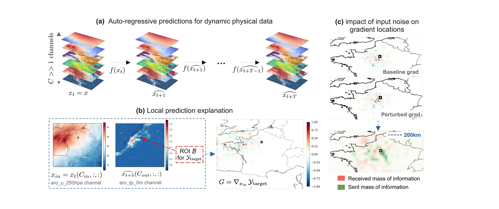
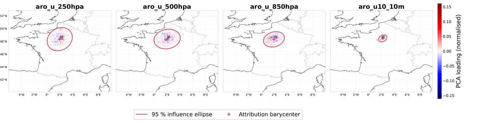

- ≈ 21×
- lower structural instability of the explanation than SmoothGrad at t + 1 (LLEcos)
- 0.815
- best faithfulness (ROAD) at t + 1, and best again at t + 5
- 1.96×
- the wall-time of SmoothGrad, on a single 16 GB laptop GPU
Publications
For a complete and current list, see Google Scholar


Each attribution map is summarised by its barycenter (+) and a 95 % influence ellipse. From 250 hPa down to 10 m, the ellipse shrinks towards the target.